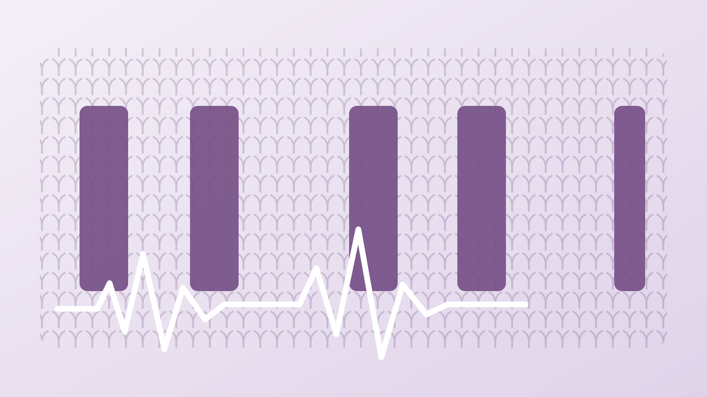

← Back to Portfolio
Research Project · Machine Knitting
Knitted Acoustic Barcode
ガーター編みの凹凸間隔にバイナリデータを埋め込み、布をなぞったときの音響波形から情報を復号するバーコードです。

Physical Representation
隆起部分の間隔を変えることで0と1を表します。前床2列を固定し、後床領域の列数を変化させます。
| Bit | Structure | Interval |
|---|---|---|
| 0 | 2 front-bed + 2 back-bed rows | Short |
| 1 | 2 front-bed + 3 back-bed rows | Long |
Encoding
- データをバイナリ列に変換する。
- 各ビットを短い／長いガーター間隔へ変換する。
- カスタムスクリプトでパターン画像を生成する。
image-kp.jsで編み機用命令へ変換し、工業用編み機で出力する。
Decoding
- コンタクトマイクを付けたプローブで布をなぞり、USBオーディオインターフェースで録音する。
- 50–500 Hzのバンドパス処理と絶対値化を行う。
- ピークとピーク間隔を検出する。
- K-meansで短い／長い間隔を分類し、0と1へ戻す。